A reading course that reads well, with four lessons missing.
A 1 Everglades course: 11 lessons written 29–30/09, one for each text the professor had posted (01–09, 14, 15). It never entered the pipeline: no shelf, no triage, no plan, no house layer. Aulas 10–13 have no page because their texts were never posted.
What went well
- Each lesson is a guided reading of one text. Aula 15 walks Cirne Lima's Relação e norma in the author's own order, with the scholastic terms explained where they appear; 3,892 words, negated inference 0.
- Concrete entries into abstract texts. Aula 05 opens Duve on a confessor with a contract question, then shows the two translations on it.
- Evenly one sitting. 1,943 to 3,892 words.
What went badly
- Four lessons missing. 10–13 have no page.
- No source block on any page. A reading course that never quotes the text it reads.
- Thin drawings. One or two figures per lesson; Aula 08 has none.
- The tic, in places. Negated inference 3.7/1k on Aulas 03 and 05.
Next, in order
- Ask the chairman for the texts of Aulas 10–13; nothing is written until they are on disk.
- Add source blocks: each lesson's own text, quoted where the lesson turns on it.
- A course blueprint is cheap here: one text per lesson, so the shelf is the syllabus.
Thoughts
Metodologia works because its shape is simple: one text, one lesson, read in the author's order. That is the course blueprint the other courses had to discover. Its gaps are a missing shelf, four texts never posted, and quotations it should be showing. It needs layers and four new lessons, not a rebuild.
CEO · 14/10
The life of the course
built by the CEO built by Codex (size = words) a commit a FLIGHT-LOG rule a check comes into force
The lessons
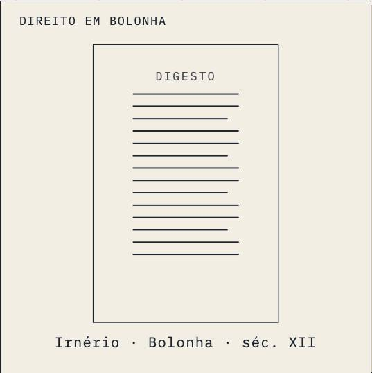
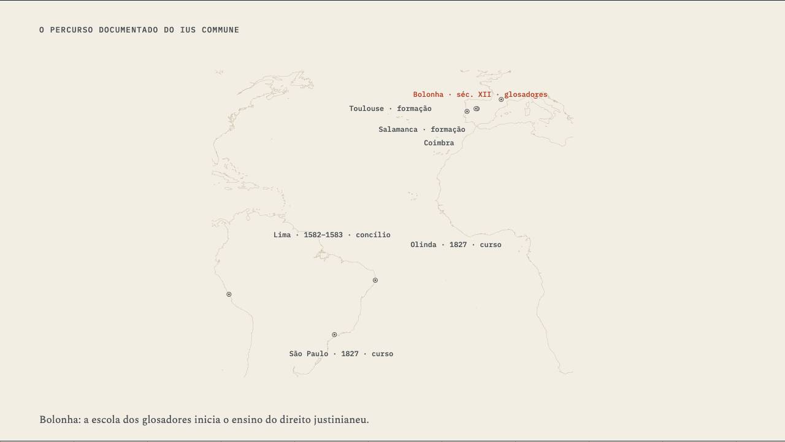
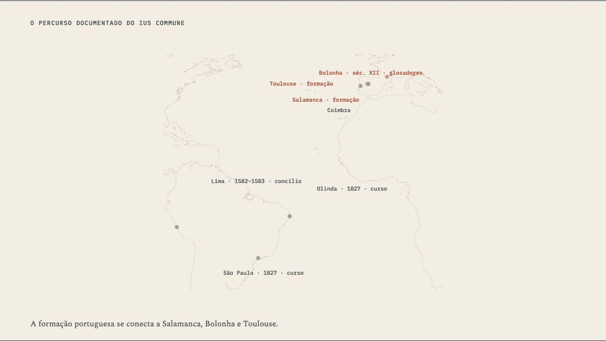
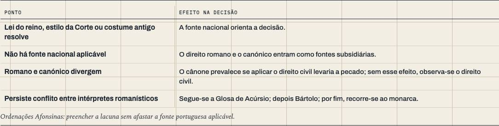
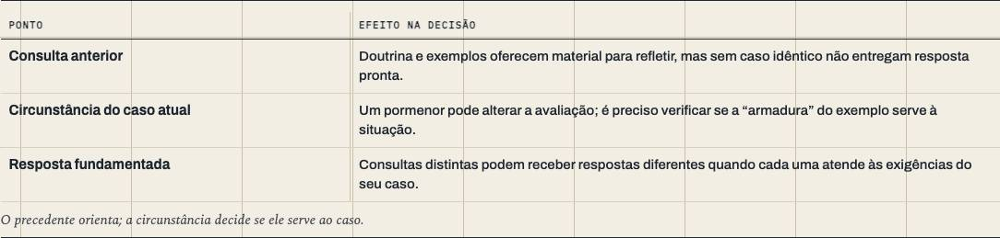
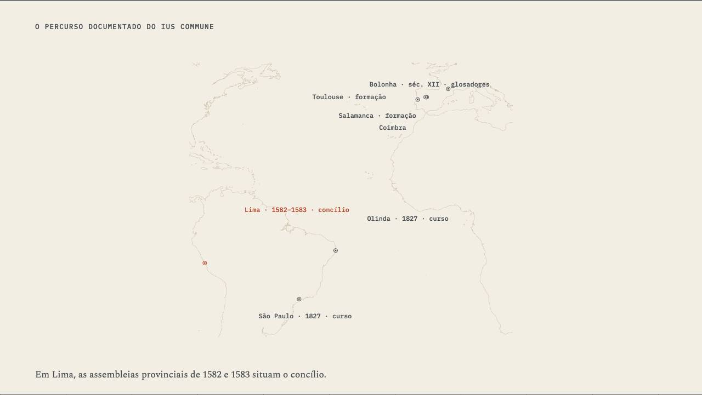
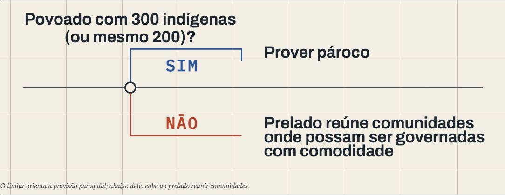
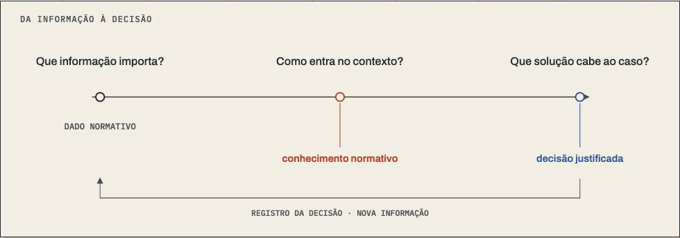
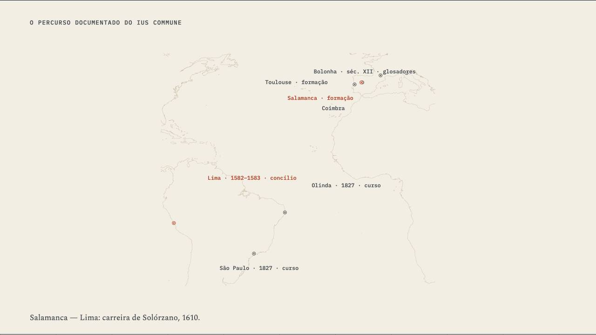
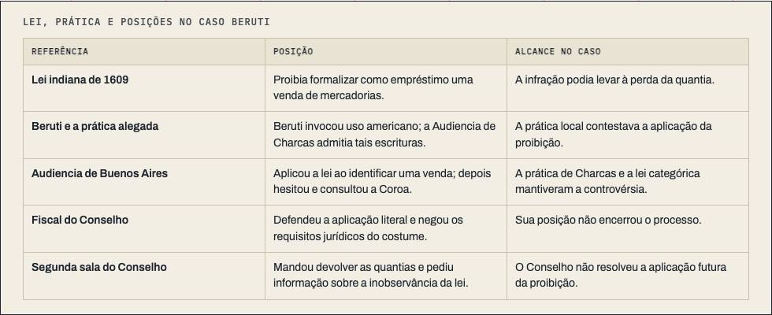

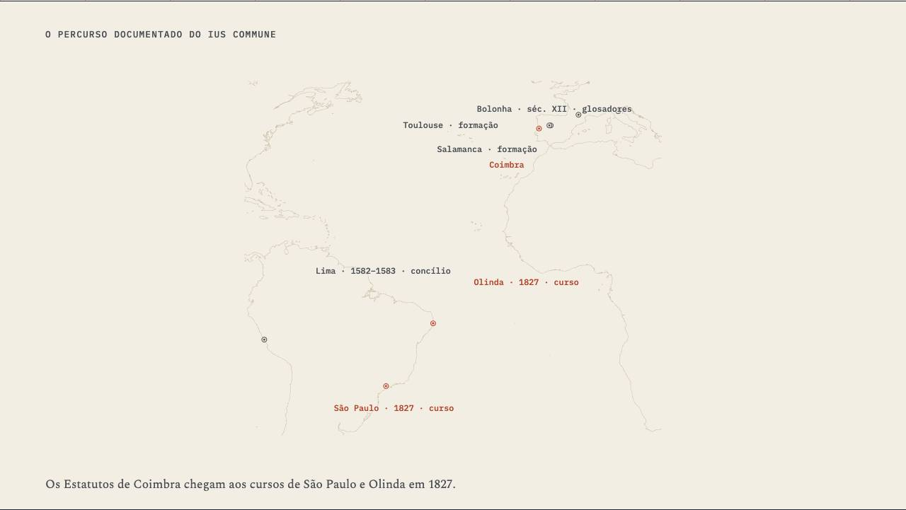
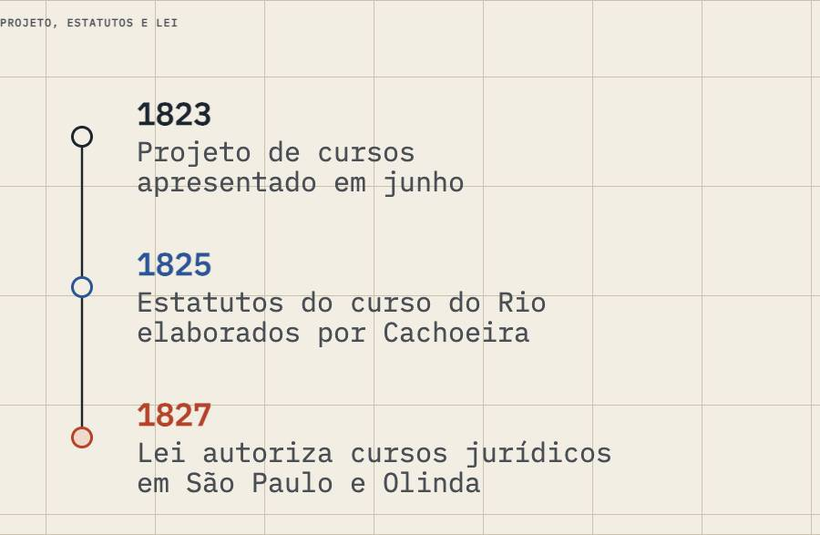
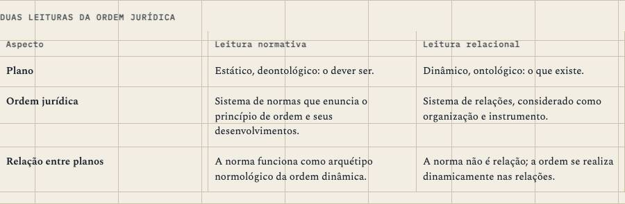
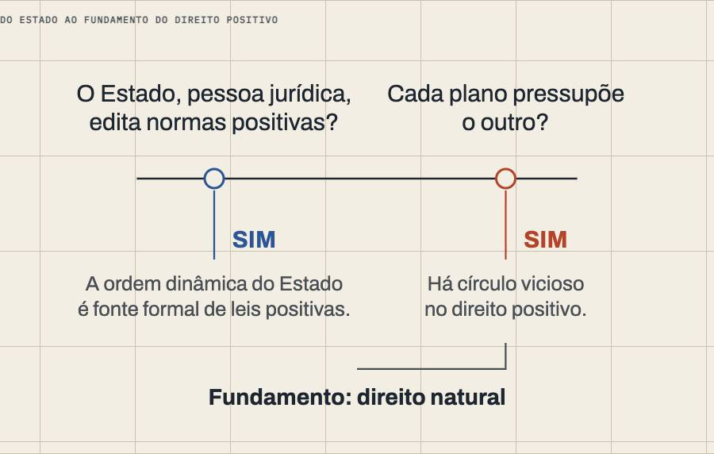
Where the sources went
No shelf, no triage: this course was written before the pipeline and never went through it, so there are no source threads to draw.